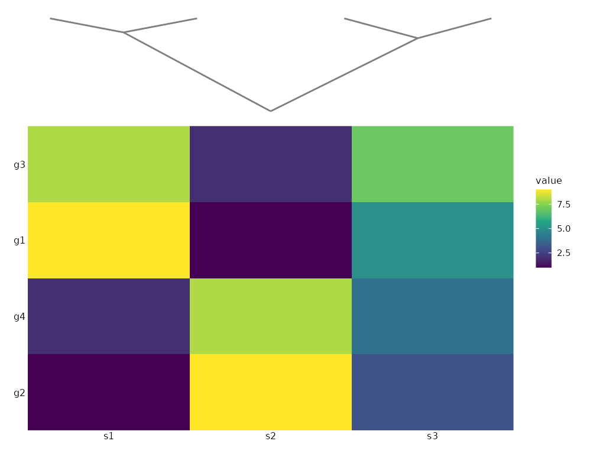

compose_annot() glues one to four plotit strips (dendrograms,
annotation bars, marginal densities) onto the matching sides of a base
plot. Strips share the base panel span: patchwork aligns the panel
areas of plots stacked in the same design row/column, so tree tips and
annotation cells line up with the base heatmap rows/columns by
construction.
Usage
compose_annot(
base,
top = NULL,
bottom = NULL,
left = NULL,
right = NULL,
heights = NULL,
widths = NULL,
gap = 0,
guides = "collect",
align = "panel",
on_top = FALSE
)Arguments
- base
A
plotitorplotit_compositeobject.- top, bottom, left, right
Optional
plotit/plotit_compositestrips attached to the matching side.- heights, widths
Strip sizes for the vertical (top/bottom) and horizontal (left/right) sides:
NULL(default) = 0.9 inch per strip;grid::unit()= absolute size; numeric = ratio relative to the base row/column (same three-state contract ascompose_grid()).- gap
Space between the strips and the base plot in inches (default 0; realised as empty spacer rows/columns).
- guides
"collect"(default) to merge legends,"keep"to keep per-panel legends.- align
Alignment reference.
"panel"(default) = strips align to the base panel area."plot"requests full-area alignment; grid members always align on panel areas, so it currently falls back to"panel"(documented approximation).- on_top
Reserved for overlap semantics (use
compose_inset());TRUEwarns and renders the strips beside the base.
Details
This is the same assembly engine behind compose_marginal()
(marginal = a top + right special case with axis-hiding
conventions). The result can be nested into compose_grid().
Examples
mat <- matrix(c(9, 1, 8, 2, 1, 9, 2, 8, 5, 3, 7, 4),
nrow = 4,
dimnames = list(paste0("g", 1:4), paste0("s", 1:3))
)
h <- stats::hclust(stats::dist(mat))
hm <- plotit(mat, encode()) |> mark_heatmap(cluster = h)
tree <- as_graph(h) |>
plotit() |>
layout_dendrogram(direction = "up") |>
mark_rule(data = ~edges)
hm |> compose_annot(top = tree)
